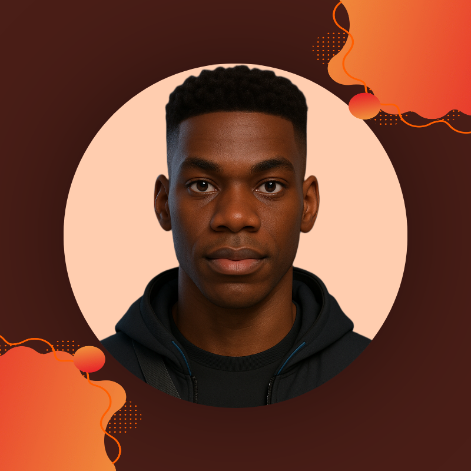

I am learning Front-End Development with @feranmi.
Aspiring Front-End Developer
Front-End Developer in training. I build clean, responsive websites and enjoy learning new technologies. I’m passionate about design, Web3, and digital growth.
I'm always open to discussing new projects and tech opportunities: